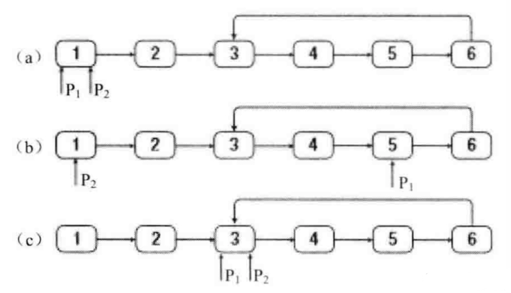
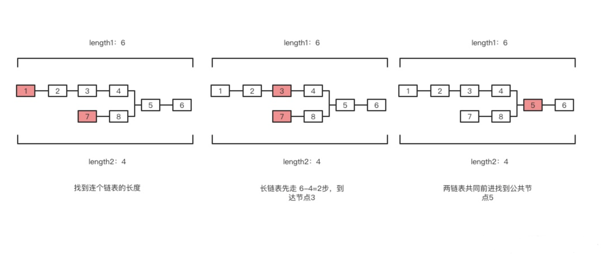

概念
链表和数组相似，它们都是有序的列表、都是线性结构（有且仅有一个前驱、有且仅有一个后继）。不同点在于，链表中，数据单位的名称叫做“结点”，而结点和结点的分布，在内存中可以是离散的。
function ListNode(val) {
this.val = val;
this.next = null;
}
const node = new ListNode(1)
node.next = new ListNode(2)
- 在链表中间添加或删除元素时，需要变更前驱结点和目标结点的 next 指针指向。
- 链表的内存是非连续的。
- 链表的插入/删除效率较高（O(1)），而访问效率较低（O(n)）；数组的访问效率较高（O(1)），而插入效率较低（O(n)）。
打印链表
输入一个链表，按链表值从尾到头的顺序返回一个ArrayList
function printReverse(head) {
const array = [];
while(head){
array.unshift(head.val)
head = head.next
}
return array
}
反转链表
输入一个链表，反转链表后，输出新链表的表头
function reverseList(head) {
if(head == null || head.next == null){
return head
}else{
//先反转后面的链表，从最后面的两个结点开始反转，依次向前
var newHead = reverseList(head.next)
//将后一个链表结点指向前一个结点
head.next.next = head
//将原链表中前一个结点指向后一个结点的指向关系断开
head.next = null
return newHead
}
}
非递归实现：
function reverseList(head) {
if(head == null || head.next == null){
return head
}
var prev = head
var cur = head.next
var temp = head.next.next
while(cur){
temp = cur.next
cur.next = prev
prev = cur
cur = temp
}
//while结束后，将翻转后的最后一个节点（即翻转前的第一个结点head）的链域置为NULL
head.next = null
return prev
}
链表合成
输入两个单调递增的链表，输出两个链表合成后的链表，当然我们需要合成后的链表满足单调不减规则。 如，输出1->3->5->7->null，2->4->6->8->null，输出：1->2->3->4->5->6->7->8->null
步骤：
- 链表头部节点比较，取较小节点。
- 头节点的next等于小节点的next和大节点中的较小值。
- 递归1，2两步，返回小节点
function mergeLinkList(head1, head2) {
if (!head1) {
return head2
}
if (!head2) {
return head1
}
let head
if (head1.val < head2.val) {
head = head1
head.next = mergeLinkList(head1.next, head2)
} else {
head = head2
head.next = mergeLinkList(head1, head2.next)
}
return head
}
倒数第k个节点
输入一个链表，输出该链表中倒数第k个结点。
简单思路： 循环到链表末尾找到 length 在找到length-k节点 需要循环两次。
优化：
设定两个节点，间距相差k个节点，当前面的节点到达终点，取后面的节点。前面的节点到达k后，后面的节点才出发。
注意： 需要考虑head为null，k为0，k大于链表长度的情况。
function findKfromTail(head, k) {
if (!head || !k) return null
let front = head, back = head
let count = 1
while(front.next){
count++
front = front.next
// 步数大于K后，front、back才同时移动
if(count > k){
back = back.next
}
}
return (k <= count) && back
}
链表中环的入口
给一个链表，若其中包含环，请找出该链表的环的入口结点，否则，输出null。
步骤： 声明两个指针 P1 P2
- 判断链表是否有环： P1 P2 从头部出发，P1走两步，P2走一步，如果可以相遇，则环存在
- 从环内某个节点开始计数，再回到此节点时得到链表环的长度 length
- P1、P2 回到head节点，让 P1 先走 length 步 ，当P2和P1相遇时即为链表环的起点

function findEntryOfLoop(head) {
if (!head || !head.next) return null
//判断是否有环
let p1 = head.next
let p2 = head.next.next
while (p1 !== p2) {
if (p2 == null || p2.next == null) {
return null
}
p1 = p1.next
p2 = p2.next.next
}
//获取环的长度
let length = 1
let temp = p1
p1 = p1.next
while (p1 != temp) {
length++
p1 = p1.next
}
//找出环入口
p1 = p2 = head
while (length-- > 0) {
p2 = p2.next
}
p1 = p1.next
while (p1 != p2) {
p1 = p1.next
p2 = p2.next
}
return p1
}
两个链表首个公共节点
输入两个链表，找出它们的第一个公共结点。
步骤：
- 先找到两个链表的长度length1、length2
- 让长一点的链表先走length2-length1步，让长链表和短链表起点相同
- 两个链表一起前进，比较获得第一个相等的节点
时间复杂度O(length1+length2) 空间复杂度O(0)

function findFirstCommon(head1, head2) {
if (!head1 || !head2) return null
// 获取链表长度
let length1 = getLength(head1);
let length2 = getLength(head2);
// 长链表先走 length2 - length1步
let short, long, interval;
if(length1 > length2){
long = head1
short = head2
interval = length1 - length2
}else{
long = head2
short = head1
interval = length2 - length1
}
while (interval-- > 0){
long = long.next
}
// 找第一个相同节点
while (long){
if(long === short){
return long
}
long = long.next
short = short.next
}
}
function getLength(head) {
let length = 0
let cur = head
while(cur.next){
cur = cur.next
length++
}
return length
}
删除链表中节点
给定单链表的头指针和要删除的指针节点，在O(1)时间内删除该节点。
- 删除的节点不是尾部节点 - 将next节点覆盖当前节点
- 删除的节点是尾部节点且等于头节点，只剩一个节点 - 将头节点置为null
- 删除的节点是尾节点且前面还有节点 - 遍历到末尾的前一个节点删除 只有第三种情况时间复杂度是O(n)，且这种情况只会出现1/n次，所以算法时间复杂度是O(1)
function deleteNode(head, node) {
if (node.next) {
node.val = node.next.val
node.next = node.next.next
} else if (node === head) {
node = null
head = null
} else {
node = head
while (node.next.next) {
node = node.next
}
node.next = null
node = null
}
return node
}
删除链表中重复的节点。
方法1.存储链表中元素出现的次数
- 用一个map存储每个节点出现的次数
- 删除出现次数大于1的节点 此方法删除节点时可以使用上面总结的办法。时间复杂度：O(n)，空间复杂度：O(n)
function deleteDuplicated(head) {
const map = new Map()
if(head && head.next){
let cur = head
while(cur){
const size = map[cur.val]
map[cur.val] = size ? size +1 : 1
cur = cur.next
}
cur = head
while (cur){
const size = map[cur.val]
if(size > 1){
this.deleteNode(head, cur) //前面定义的函数
}else{
cur = cur.next
}
}
}
return head
}